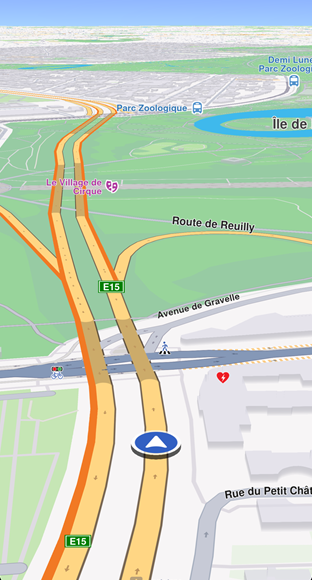
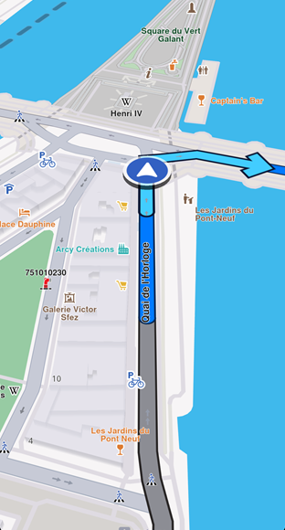

Get Started with Navigation¶
This guide shows you how to implement turn-by-turn navigation in your Flutter app.
📝 Note: What you need:
- A computed route (non-navigable routes like range routes are not supported)
- Proper location permissions for real GPS navigation
- Map data downloaded for offline functionality
Key features:
- Turn-by-Turn Directions - Detailed route instructions based on current location
- Live Guidance - Text and voice instructions via Text-to-Speech integration
- Warning Alerts - Speed limits, traffic reports, and route events
- Offline Support - Works offline with pre-downloaded map data
The navigation system tracks your device location, speed, and heading, matching them against the route to generate accurate guidance. Instructions update dynamically as you progress.
When you deviate from the route, the system notifies you and offers recalculation options. It can also adjust routes based on real-time traffic for faster alternatives.
You can test navigation features using the built-in location simulator during development.
How Navigation Works¶
The SDK offers two navigation methods:
- Navigation - Uses position data from
PositionServiceto guide users along the route - Simulation - Simulates navigation instructions without real position data for testing
Navigation mode uses PositionService with:
- Real GPS Data - Call
PositionService.setLiveDataSourceto use real-time GPS. Requires location permissions on Android and iOS - Custom Position Data - Configure a custom data source for position updates. No permissions required. See Custom positioning
⚠️ Attention: Only one navigation or simulation can be active at a time, regardless of map count.
Start Navigation¶
Once you have a computed route, start navigation with this code:
void navigationInstructionUpdated(NavigationInstruction instruction,
Set<NavigationInstructionUpdateEvents> events) {
for (final event in events) {
switch (event) {
case NavigationInstructionUpdateEvents.nextTurnUpdated:
showSnackbar("Turn updated");
break;
case NavigationInstructionUpdateEvents.nextTurnImageUpdated:
showSnackbar("Turn image updated");
break;
case NavigationInstructionUpdateEvents.laneInfoUpdated:
showSnackbar("Lane info updated");
break;
}
}
final instructionText = instruction.nextTurnInstruction;
// handle instruction
}
void onDestinationReached(Landmark destination) {
// handle destination reached
}
void onError(GemError err) {
// handle error
}
TaskHandler? handler = NavigationService.startNavigation(route,
onNavigationInstruction: navigationInstructionUpdated,
onDestinationReached: onDestinationReached,
onError: onError);
// [Optional] Set the camera to follow position.
// Usually we want this when in navigation mode
mapController.startFollowingPosition();
// At any moment, we can cancel the navigation
// NavigationService.cancelNavigation(taskHandler);The code declares functions that handle main navigation events:
- Navigation errors (see table below)
- Destination reached
- New instructions available
The err provided by the callback function can have the following values:
| Value | Significance |
|---|---|
GemError.success |
Successfully completed |
GemError.cancel |
Cancelled by the user |
GemError.waypointAccess |
Couldn't be found with the current preferences |
GemError.connectionRequired |
If allowOnlineCalculation = false in the routing preferences and the calculation can't be done on the client side due to missing data |
GemError.expired |
Calculation can't be done on client side due to missing necessary data and the client world map data version is no longer supported by the online routing service |
GemError.routeTooLong |
Routing was executed on the online service and the operation took too much time to complete (usually more than 1 min, depending on the server overload state) |
GemError.invalidated |
The offline map data changed ( offline map downloaded, erased, updated ) during the calculation |
GemError.noMemory |
Routing engine couldn't allocate the necessary memory for the calculation |
Navigation stops when you reach the destination or cancel it manually.

Navigating on route
💡 Tip: Before starting navigation, instruct the
mapControllerto follow the user's position. See Show your location on the map for customization options.
Display the route on the map for better navigation clarity. Turn-by-turn navigation arrows disappear once passed. Learn more in Display routes.

Parsed route is displayed with a gray color (default)
The traveled portion of the route changes color using the traveledInnerColor parameter of RouteRenderSettings.
Start Simulation¶
Start a simulation with this code:
void simulationInstructionUpdated(NavigationInstruction instruction,
Set<NavigationInstructionUpdateEvents> events) {
for (final event in events) {
switch (event) {
case NavigationInstructionUpdateEvents.nextTurnUpdated:
showSnackbar("Turn updated");
break;
case NavigationInstructionUpdateEvents.nextTurnImageUpdated:
showSnackbar("Turn image updated");
break;
case NavigationInstructionUpdateEvents.laneInfoUpdated:
showSnackbar("Lane info updated");
break;
}
}
final instructionText = instruction.nextTurnInstruction;
// handle instruction
}
mapController.preferences.routes.add(route, true);
TaskHandler? taskHandler = NavigationService.startSimulation(
route,
onNavigationInstruction: simulationInstructionUpdated,
speedMultiplier: 2,
);
// [Optional] Set the camera to follow position.
// Usually we want this when in navigation mode
mapController.startFollowingPosition();
// At any moment, we can cancel the navigation
// NavigationService.cancelNavigation(taskHandler);speedMultiplier sets simulation speed (default is 1.0, matching the maximum speed limit for each road segment). Check simulationMinSpeedMultiplier and simulationMaxSpeedMultiplier for allowed values.
Listen for Navigation Events¶
You can monitor various navigation events. The previous examples showed handling the onNavigationInstructionUpdated event.
Here are additional events you can handle:
void onNavigationInstruction(NavigationInstruction navigationInstruction,
Set<NavigationInstructionUpdateEvents> events) {}
void onNavigationStarted() {}
void onTextToSpeechInstruction(String text) {}
void onWaypointReached(Landmark landmark) {}
void onDestinationReached(Landmark landmark) {}
void onRouteUpdated(Route route) {}
void onBetterRouteDetected(
Route route, int travelTime, int delay, int timeGain) {}
void onBetterRouteRejected(GemError error) {}
void onBetterRouteInvalidated() {}
void onSkipNextIntermediateDestinationDetected() {}
void onTurnAround() {}
void onRouteCalculationStarted() {}
void onRouteCalculationCompleted(GemError error) {}
TaskHandler? taskHandler = NavigationService.startNavigation(
route,
onNavigationInstruction: onNavigationInstruction,
onNavigationStarted: onNavigationStarted,
onTextToSpeechInstruction: onTextToSpeechInstruction,
onWaypointReached: onWaypointReached,
onDestinationReached: onDestinationReached,
onRouteUpdated: onRouteUpdated,
onBetterRouteDetected: onBetterRouteDetected,
onBetterRouteRejected: onBetterRouteRejected,
onBetterRouteInvalidated: onBetterRouteInvalidated,
onSkipNextIntermediateDestinationDetected: onSkipNextIntermediateDestinationDetected,
onTurnAround: onTurnAround,
onRouteCalculationStarted: onRouteCalculationStarted,
onRouteCalculationCompleted: onRouteCalculationCompleted,
);These events are described in the following table:
| Event | Explanation |
|---|---|
onNavigationInstruction(NavigationInstruction navigationInstruction, Set<NavigationInstructionUpdateEvents> events) |
Triggered when a new navigation instruction is available, providing details about the instruction and offers additional information regarding the reason the event was triggered (valuable for optimizing UI redraws), information accessible in the NavigationInstructionUpdateEvents enum. |
onNavigationStarted() |
Called when navigation begins, signaling the start of the route guidance. |
onTextToSpeechInstruction(String text) |
Provides a text string for a maneuver that can be passed to an external text-to-speech engine for audio guidance. |
onWaypointReached(Landmark landmark) |
Invoked when a waypoint in the route is reached, including details of the waypoint. |
onDestinationReached(Landmark landmark) |
Called upon reaching the final destination, with information about the destination landmark. |
onRouteUpdated(Route route) |
Fired when the current route is updated, providing the new route details. |
onBetterRouteDetected(Route route, int travelTime, int delay, int timeGain) |
Triggered when a better alternative route is detected, including the new route and details such as travel time, delays caused by traffic and time gains. See the Better route detection guide for more details. |
onBetterRouteRejected(GemError error) |
Called when a check for better routes fails, with details of the rejection error. Used especially for debugging. |
onBetterRouteInvalidated() |
Indicates that a previously suggested better route is no longer valid. |
onSkipNextIntermediateDestinationDetected() |
Indicates we are getting away from the first intermediary waypoint. If this is received, it could be a good moment to call NavigationService.skipNextIntermediateDestination(). |
onTurnAround() |
Called when user travel direction violates a link one way restriction or after a navigation route recalculation, if the new route is heading on the opposite user travel direction. |
onRouteCalculationStarted() |
Called when a route recalculation is initiated. Also gets called at the start of the navigation process. |
onRouteCalculationCompleted(GemError error) |
Called when a route recalculation is completed, providing details about any errors that occurred related to route calculation. Also gets called at the start of the navigation process. See the calculate routes guide for information about the possible error values. The route is passed via the onRouteUpdated callback |
📝 Note: Most callbacks work for both simulation and navigation. The
onSkipNextIntermediateDestinationDetectedandonTurnAroundmethods are not called during simulation.💡 Tip: When you receive
onSkipNextIntermediateDestinationDetected(), drop the first waypoint:NavigationService.skipNextIntermediateDestination();
Use Custom Data Sources¶
Navigation typically uses GPS position, but you can also use custom-defined positions.
Create a custom data source, set the position service to it, start the data source, and begin navigation as you would with live data.
See the Custom positioning guide for details.
Stop Navigation or Simulation¶
Use the cancelNavigation method from NavigationService to stop navigation or simulation. Pass the TaskHandler returned by startSimulation or startNavigation. Pausing simulation is not currently supported.
📝 Note: After stopping simulation, the position service reverts to the previous data source if one exists.
Export Navigation Instructions¶
The exportAs method serializes the current navigation instruction into a Uint8List data buffer. Currently, only PathFileFormat.packedGeometry is supported.
final Uint8List bytes = instruction.exportAs(fileFormat: PathFileFormat.packedGeometry);🚨 Alert:
exportAsonly works withPathFileFormat.packedGeometry. Other values return an emptyUint8List.
Run Navigation In Background¶
To use navigation while your app is in the background, additional setup is required for iOS and Android.
See the Background location guide for configuration instructions.